近代地震学から地震予知工学へ（その1・その2）
安芸敬一 連載「私の研究人生」
記事の冒頭によれば、この連載は安芸先生と編集担当の久田嘉章先生（工学院大学）とのメールによる対話で構成されており、安芸先生のメールは英語であったため、久田先生が日本語に訳したものです。このため日本語版のみです。旧Mr.AkiHomepageに画像として掲載されていたものを、そのまま掲載しています。
From the serial “My research life” in Shinsai Yobo, No.199 (November 2004) and No.202 (May 2005). According to the introduction of the article, it was composed from e-mail exchanges between Prof. Aki and the editor, Prof. Yoshiaki Hisada; Prof. Aki wrote in English and Prof. Hisada translated the text into Japanese. Only the Japanese version is available.
その1
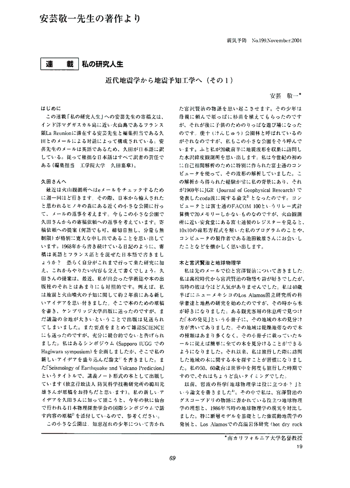
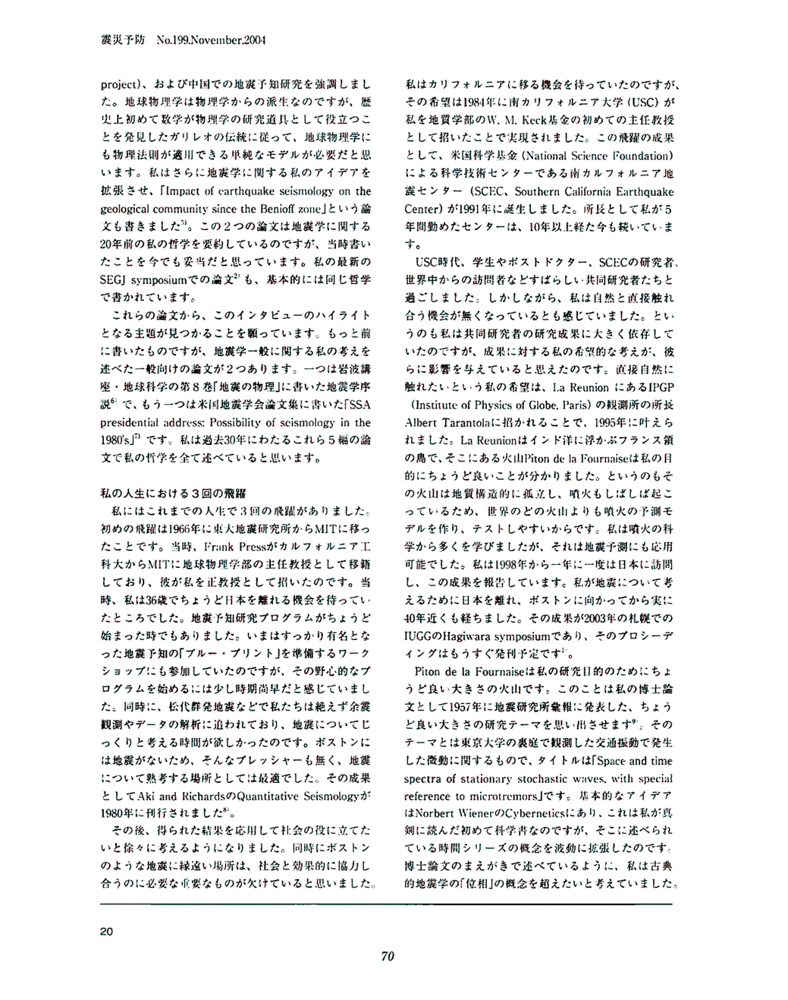
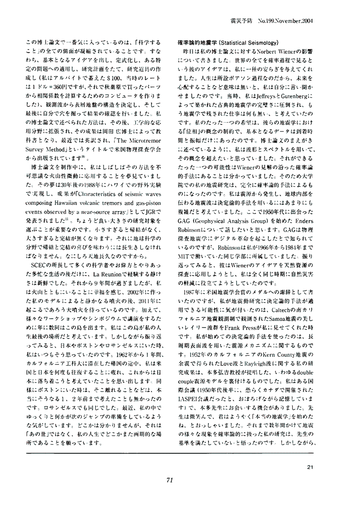
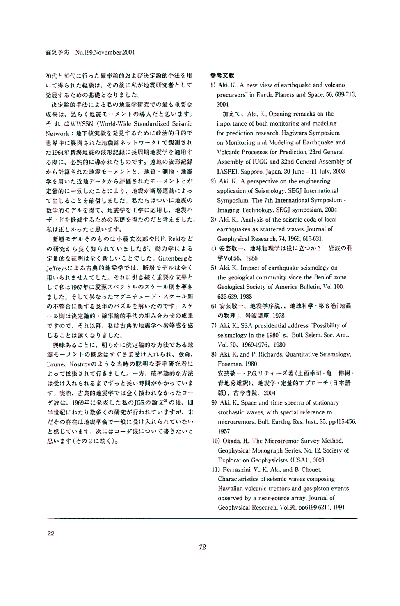
その2
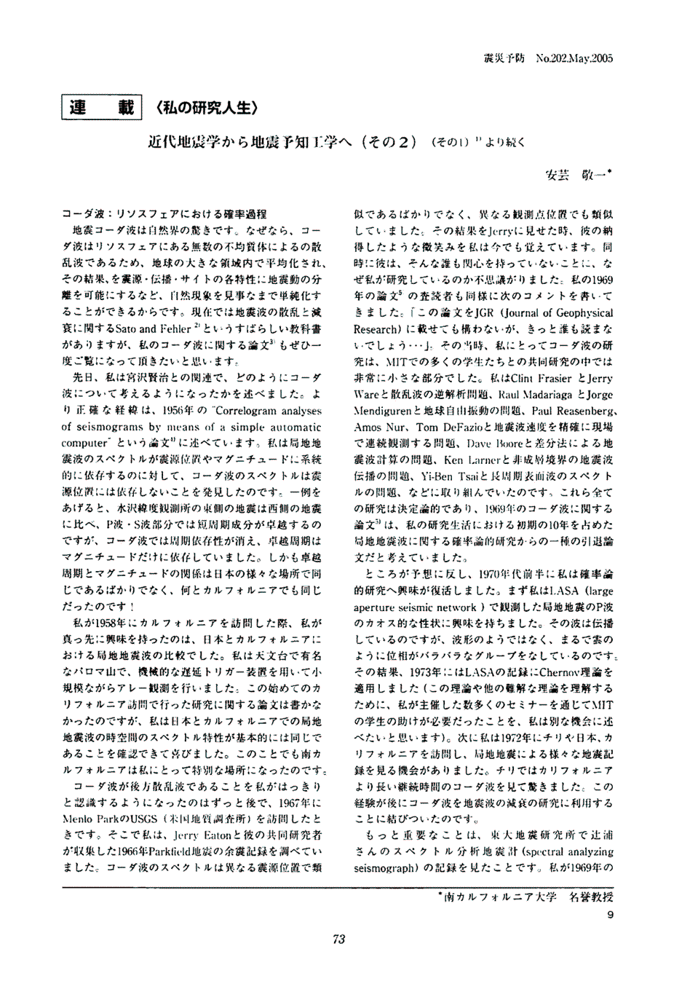
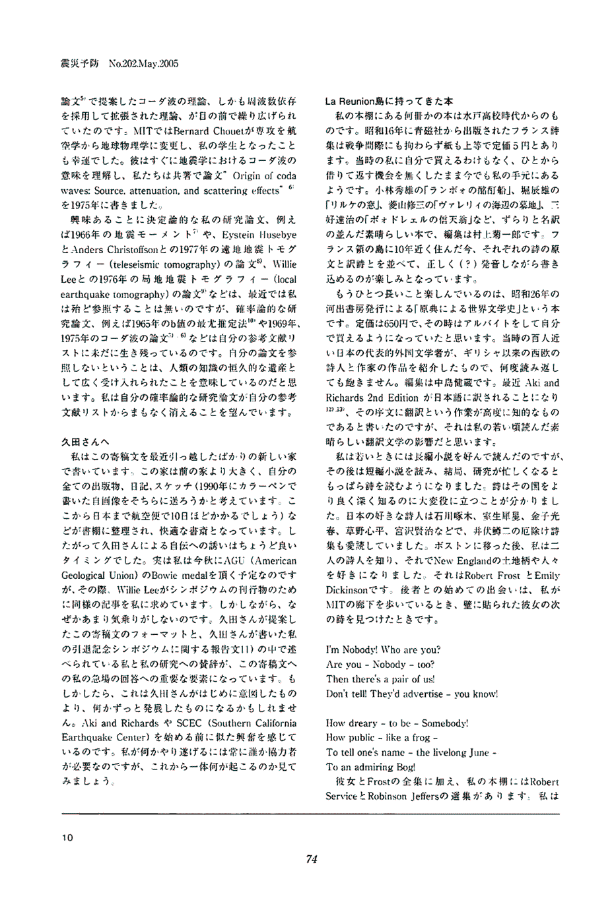
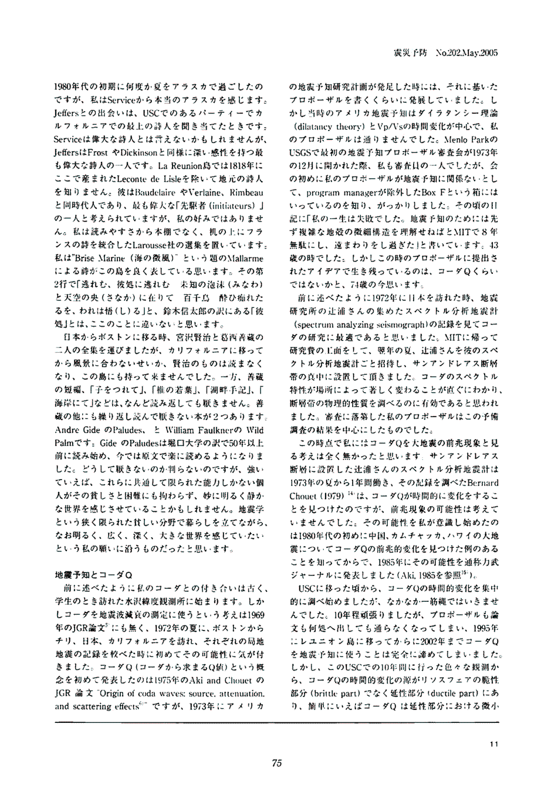
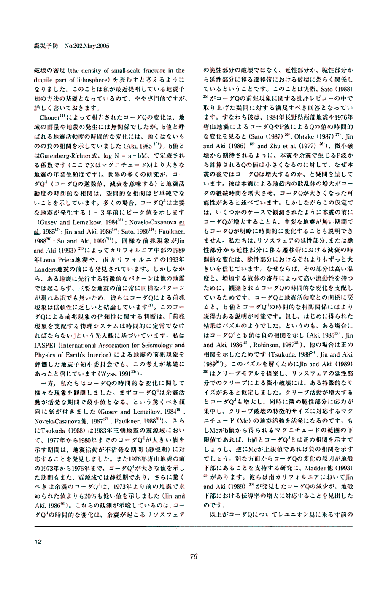
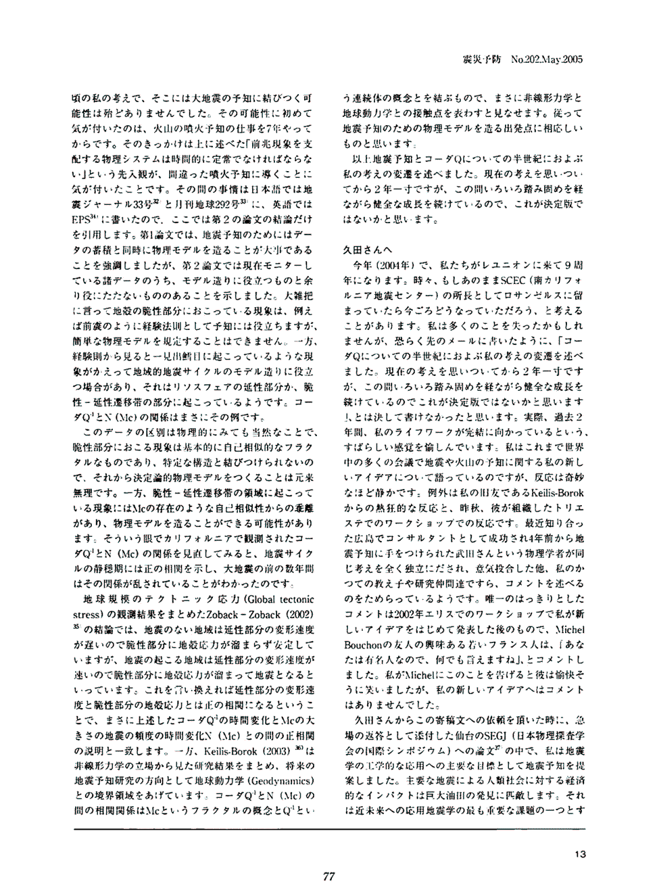
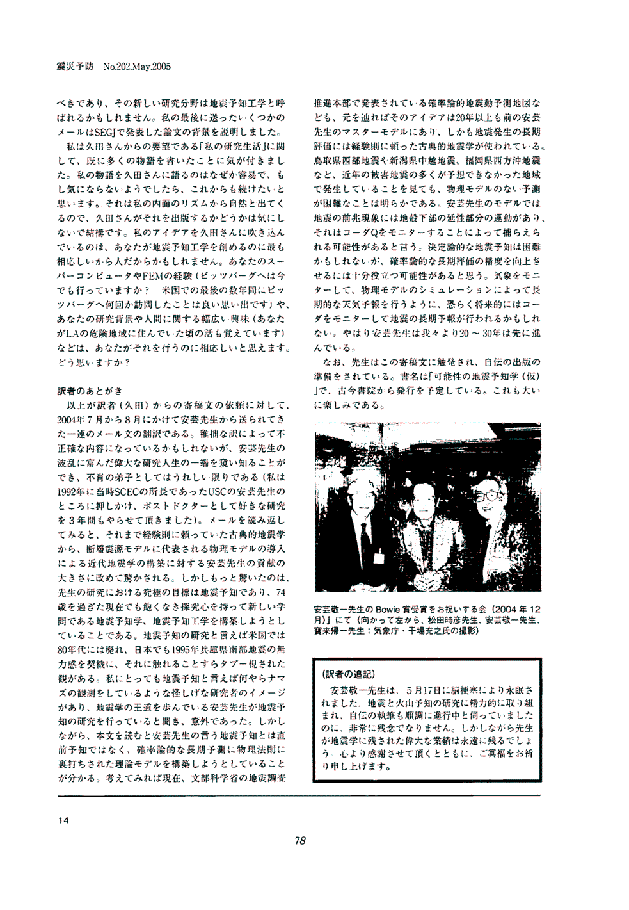
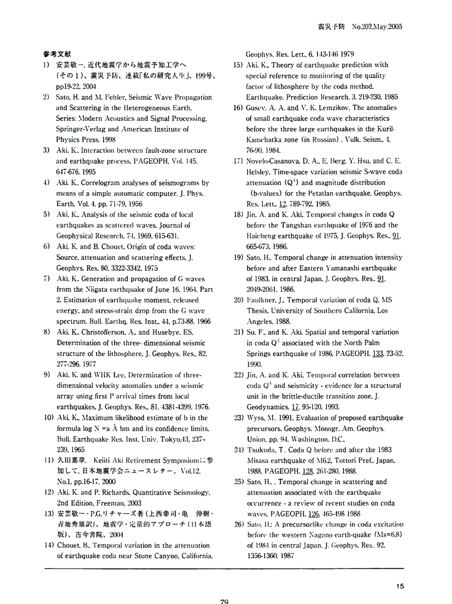
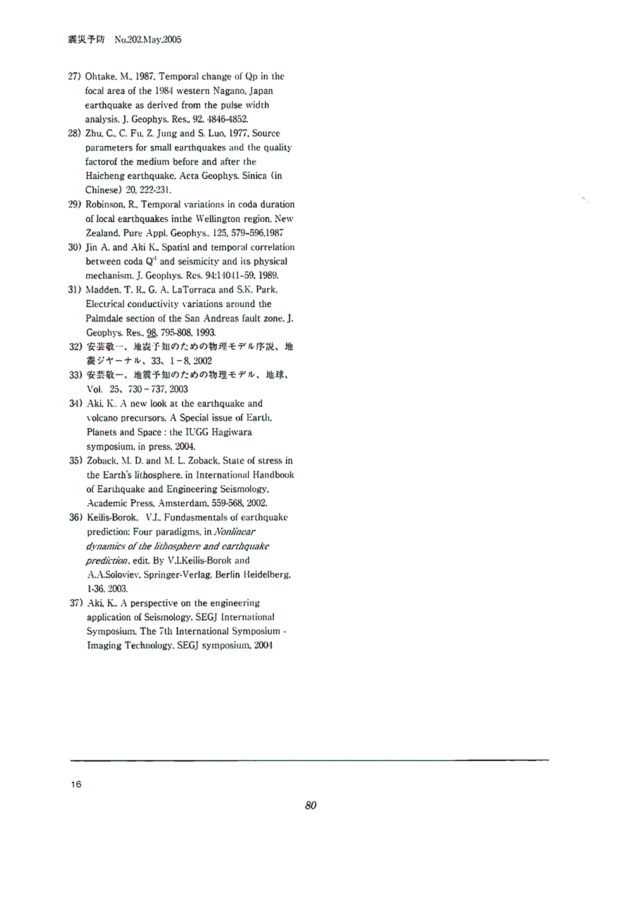